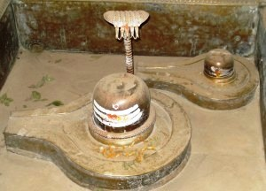

<?xml version="1.0" encoding="UTF-8"?><rss version="2.0"
	xmlns:content="http://purl.org/rss/1.0/modules/content/"
	xmlns:wfw="http://wellformedweb.org/CommentAPI/"
	xmlns:dc="http://purl.org/dc/elements/1.1/"
	xmlns:atom="http://www.w3.org/2005/Atom"
	xmlns:sy="http://purl.org/rss/1.0/modules/syndication/"
	xmlns:slash="http://purl.org/rss/1.0/modules/slash/"
	>

<channel>
	<title>Kashyapeshwar &#8211; Varanasi Temples</title>
	<atom:link href="index.html" rel="self" type="application/rss+xml" />
	<link>../../../../../index.html</link>
	<description>Temples of Varanasi as referred to in Kashi Khand</description>
	<lastBuildDate>Thu, 19 Jun 2025 05:16:46 +0000</lastBuildDate>
	<language>en-US</language>
	<sy:updatePeriod>hourly</sy:updatePeriod>
	<sy:updateFrequency>1</sy:updateFrequency>
	<generator>https://wordpress.org/?v=4.6.29</generator>
	<item>
		<title>KASHYAPESHWAR</title>
		<link>../../../../../shiva-temples/kashyapeshwar/index.html</link>
		<pubDate>Sun, 09 May 2010 09:12:34 +0000</pubDate>
		<dc:creator><![CDATA[admin]]></dc:creator>
				<category><![CDATA[Kashyapeshwar]]></category>
		<category><![CDATA[Other Shiva Temples (E-K)]]></category>
		<category><![CDATA[Shiva Temples]]></category>
		<category><![CDATA[yatra]]></category>

		<guid isPermaLink="false">../../../../../p=310.html</guid>
		<description><![CDATA[Kashi Khand, Chapter 100 has prescribed Antargrihi Yatra to be performed daily by devotees.  The Yatra (religious tour) covers various deities in the innermost divine place in Kashi. Among various deities mentioned in the above Yatra, Kashi Khand mentions Kashyapeshwar in the vicinity of Harikesheshwar. Devotees who worship Kashyapeshwar will attain Mukti in Kashi. Mythologically, [&#8230;]]]></description>
				<content:encoded><![CDATA[<p>Kashi Khand, Chapter 100 has prescribed Antargrihi Yatra to be performed daily by devotees.  The Yatra (religious tour) covers various deities in the innermost divine place in Kashi.</p>
<p>Among various deities mentioned in the above Yatra, Kashi Khand mentions Kashyapeshwar in the vicinity of Harikesheshwar. Devotees who worship Kashyapeshwar will attain Mukti in Kashi. Mythologically, this Ling is supposed to have been installed by Sage Kashyap.</p>
<p></p>
<p style="text-align: center;">(<strong><span style="text-decoration: underline;">KASHYAPESHWAR)</span></strong></p>
<p><strong><span style="text-decoration: underline;">LOCATION OF KASHYAPESHWAR</span></strong></p>
<p>Kashyapeshwar is located at D-35/79, Near Jangambari Mutt, Jangambari, Varanasi.  This is a famous place and can be reached by rickshaw.  If a devotee travels from Sonarpura to Godowlia, just after Jangambari Mutt (on the same side), in between Raj Furnishers and Akash Travels, there is a flight of steps going up. The Shiv Ling is located on the left side when a devotee climbs the flight of steps.</p>
<p><strong><span style="text-decoration: underline;">TYPES OF POOJA</span></strong></p>
<p>The place of worship is open from 07.30 a.m. to 09.00 a.m. and from 06.00 p.m. to 07.00 p.m.  Aarties are conducted in the morning.</p>
]]></content:encoded>
			</item>
	</channel>
</rss>
